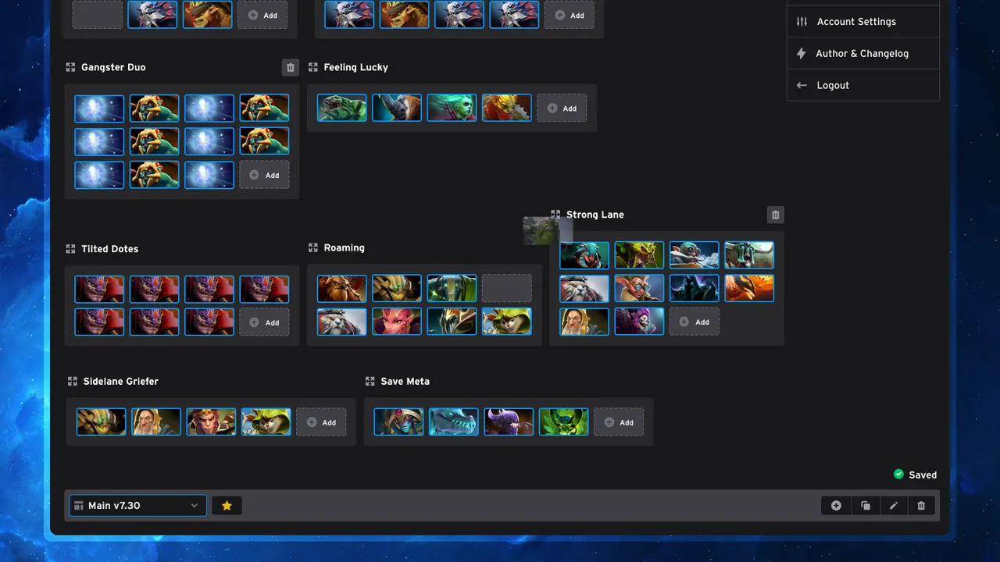

A Smarf thumbnail that holds its own on /work
Size1280×720, shown about 360px wide in the grid.
House styleNeighbours zoom into the app and let it bleed past the frame.
No textNo other thumbnail has a headline; the UI carries it.
Current appToday's thumbnail shows the old v1 board.
Now
The live thumbnail (old v1 board)

Dota art backdrop ties it to the game.
Shows the old board: no colours, old nav, old dock.
Small heroes; reads as a grey grid at grid size.
A
Board window over Windranger art
Same recipe as Tenor and Pulse: art behind, app bleeding off.
The nav's badge and wordmark name it without a caption.
The art is busy; most of it hides behind the window.
B
One drag, in close-up
Portraits are huge; it reads at any size.
Shows the thing you do in Smarf, mid-motion.
No logo; leans on the card's title.
C
The whole tier list, tilted
The tier colours make a striking band of colour.
Perspective is a different move from its neighbours.
Far rows go small and soft.
D
Bounty Hunter breaking out of the window

Most dramatic; the hero says "Dota" at a glance.
The S Tier's first portrait is the same hero.
Half the frame is art, not product.
E
Hero picker open over the board
A wall of portraits; very "every hero, organised".
Shows a crafted detail: search narrowing as you type.
The picker hides what a board is.
Further Actions
ExploreExplore from A with other art: Invoker, Lina, or a plain indigo field.
RemixRemix B with the window rim, so it matches the neighbours' framing.
SettleSettle on one and render it to a 1280×720 WebP for the site.